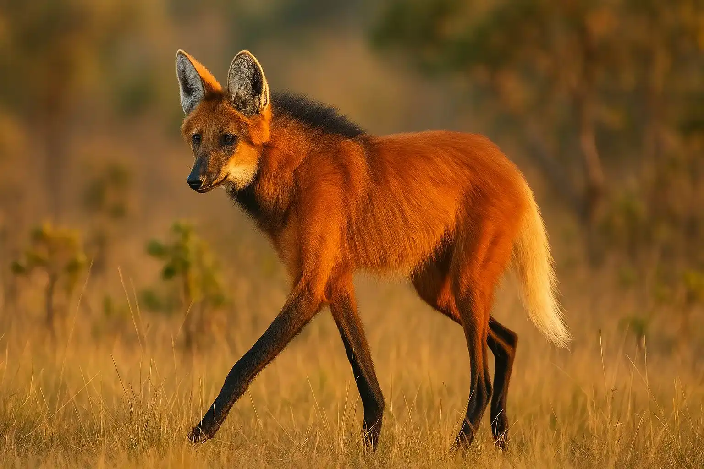
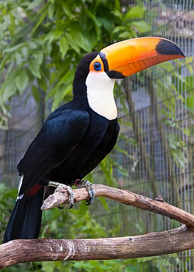
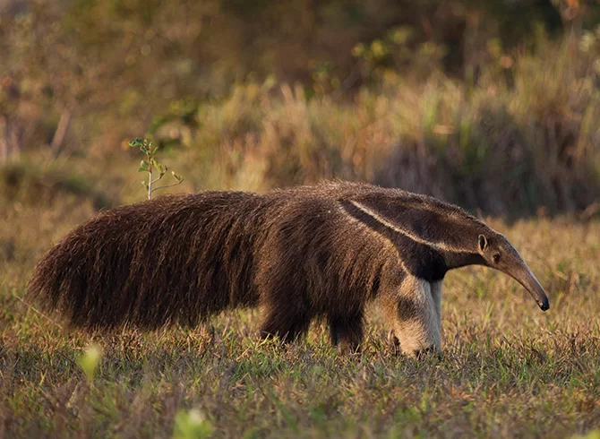

Professor Naná
Lobo Guará
- O lobo-guará parece um cachorro de pernas longas e pelo alaranjado.
- Ele vive no Cerrado e gosta de frutas, como a lobeira, além de pequenos animais.

Professor Tuca
Tucano
- O tucano é um pássaro famoso por seu bico grandão e colorido!
- Mora em florestas do Brasil, como a Amazônia e a Mata Atlântica, e adora frutas bem docinhas.

Professor Duá
Tamanduá-Bandeira
- O tamanduá-bandeira é um bichão de focinho comprido que adora comer formigas e cupins!
- Ele vive no Brasil em lugares como o Cerrado, Pantanal e Mata Atlântica, usando sua língua gigante para pegar insetos.

Professora Jade
Jaguatirica
- A jaguatirica é como um gatão cheio de manchas lindas! 🐆
- Ela vive no Brasil em lugares como a Amazônia, Pantanal, Mata Atlântica e Cerrado.
- De noite, sai para passear e caçar, pulando e escalando árvores como uma verdadeira atleta.

Aluno
Bem-Te-Vi
- O bem-te-vi é um passarinho amarelinho com asas escuras e um topete fofinho.
- Ele vive em quase todo o Brasil e adora cantar bem alto o seu famoso “bem-te-vi!”, que parece até que está falando seu nome! 🎶